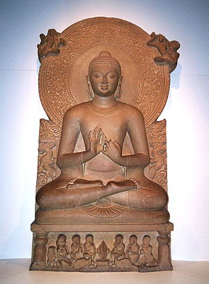

Knowledge Village

The Ultimate Weapon is an Educated Mind
- Links
- About Us
- Photo Gallery
- Contact Us
- Events
- Tech Fests
- Cultural Fests
- Seminars
- Workshops
Gautam Budha
Gautama Buddha or Siddhārtha Gautama Buddha (Sanskrit: सिद्धार्थ गौतम बुद्ध; Pali: Siddhattha Gotama) was a spiritual teacher from the Indian subcontinent [note 1], on whose teachings Buddhism was founded.[6]
The word Buddha is a title for the first awakened being in an era. In most Buddhist traditions, Siddhartha Gautama is regarded as the Supreme Buddha (P. sammāsambuddha, S. samyaksaṃbuddha) of our age, "Buddha" meaning "awakened one" or "the enlightened one." [note 2] Gautama Buddha may also be referred to as Śākyamuni (Sanskrit: शाक्यमुनि "Sage of the Śākyas").
Gautama is the primary figure in Buddhism, and accounts of his life, discourses, and monastic rules are believed by Buddhists to have been summarized after his death and memorized by his followers. Various collections of teachings attributed to him were passed down by oral tradition, and first committed to writing about 400 years later.